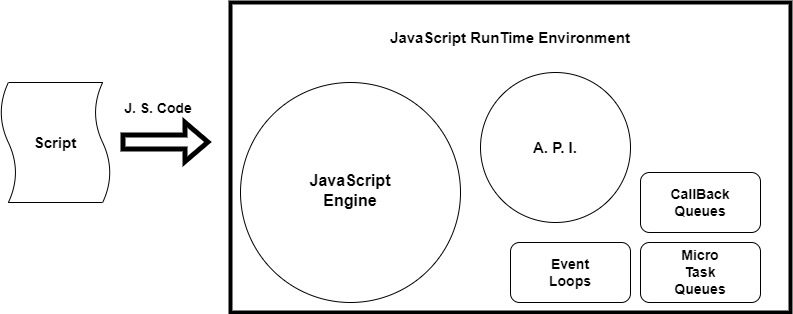

JavaScript - Day 16, March
What is JavaScript?
JavaScript is a dynamic programming language that is used for creating dynamic pages, in web & mobile applications, for game development and to make the web page interactive for the user. It is used for client-side scripting to perform some functionality behind the browser and allows to implement dynamic features on web pages that cannot be achieved with only HTML and CSS.
What is JavaScript Runtime Environment?
It is an environment which makes the JavaScript code go through various stages of execute and to function properly in a browser. It is basically a collection of JS engine, Web API's, event loops, callback queues, micro task queues etc.

What is JavaScript Engine?
JavaScript engine was created by the JavaScript founder named as Brenden Eich. It is software component that executes JavaScript code. Different browsers have different JavaScript Engines, for example. Google Chrome has V8 Engine, Internet explorer have Chakra and Mozilla have Spider Monkey. Taking V8 Engine as an example:

- Parser:A lexical analysis (checks for syntax and semantics) that results into the breaking of code into tokens in order to understand their meanings and these tokens gets converted into Abstract Syntax Tree(AST).
- Abstract Syntax Tree (AST):It is a hierarchical tree like structure of program representation which allows interpreter to understand the program. This AST is initially goes to the Interpreter.
- Interpreter:It lets the AST to get converted into Byte code. In V8 engine, this process is known as Ignition but when some code gets repeated again and again
- Compiler:It job is to spit out the most optimized byte code. In V8 Engine, This compiler is called as TurboFan. This process gets repeated again and again which means that JavaScript Engine's speed gets improved since profiler and compiler will be producing and updating the optimized byte code.
What is Execution in JavaScript?
JavaScript Execution Context is divided into two phases:

- Creation Phase:It is the initial phase of Global Execution Content (GEC). In this stage the JavaScript engine goes through the code and allocates memory in heap and placing undefined to its value of the variable and all the functions defined will be the function itself. The GEC is pushed into the callstack and it remains there until all the code get's executed. After complete execution the GEC gets popped from callstack.
- Execution Phase:This is the final phase of GEC. Execution phase is the stage in which the code will be executed line by line which means all the variables are assigned with their actual values and to the function. When function gets executed a seperate execution context gets executed ie. function execution which is pushed into the stack ie. at the top of the global execution context.Here the code inside the function gets excuted. After the execution of the function the function execution context gets popped out of the callstack and the rest of the code gets excuted.